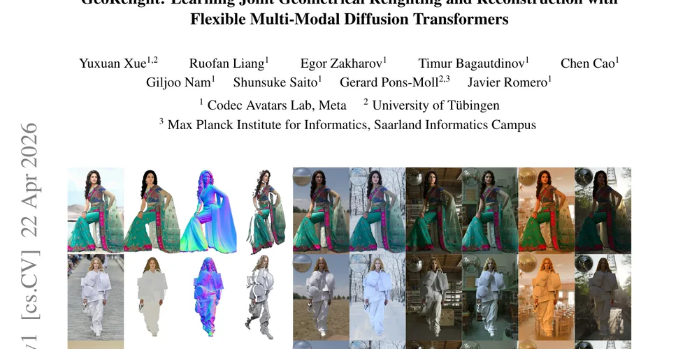
01GeoRelight
Joint geometry-aware relighting and reconstruction with flexible multi-modal diffusion transformers.
PaperResearch scientist · Madrid
I work at the intersection of computer vision and graphics—building models that understand human shape and motion, and turn them into compelling visual experiences.
About
I am a Research Scientist Lead at Meta, where I work on human data collection and modeling toward VR communication that is indistinguishable from reality. For more than fifteen years, my research has explored how computers perceive, reconstruct, and generate people.
My academic work helped establish influential parametric models of the body, face, and hands—including SMPL, FLAME, and MANO, and MHR. In industry, I have led and contributed to work spanning personalized garments, fitness, new shopping experiences, and photorealistic avatars.
Research highlights

01Joint geometry-aware relighting and reconstruction with flexible multi-modal diffusion transformers.
Paper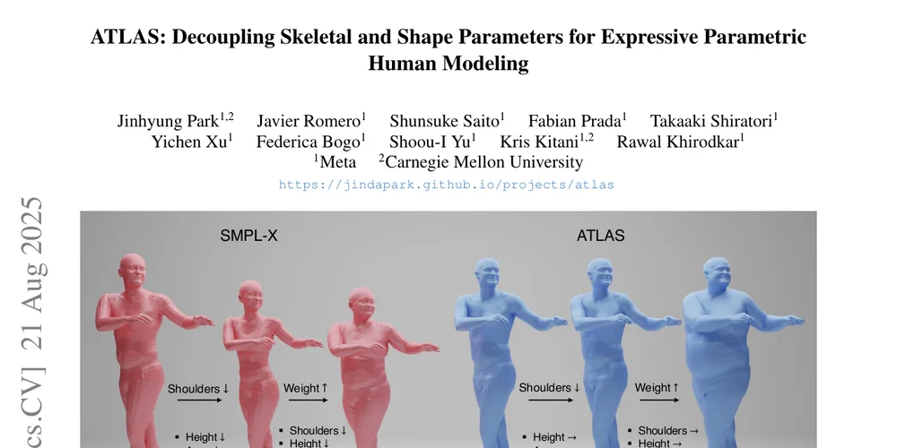
02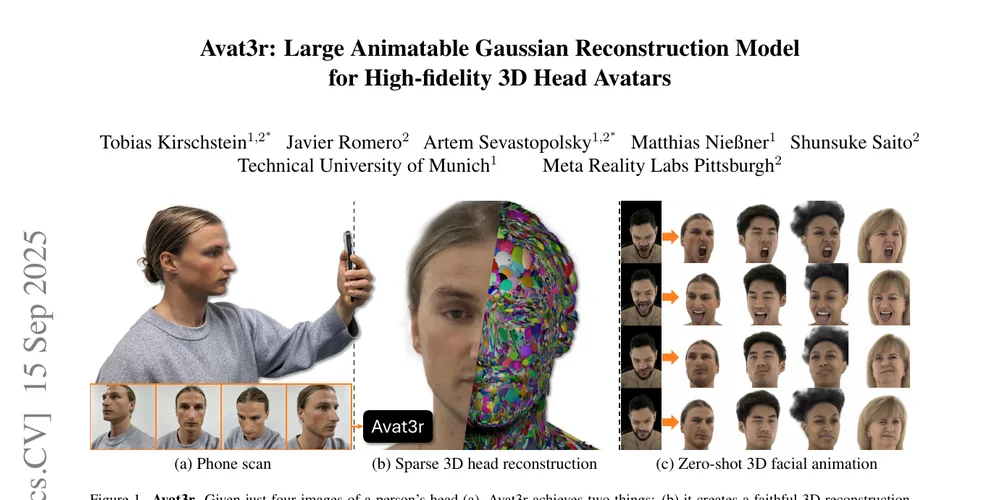
03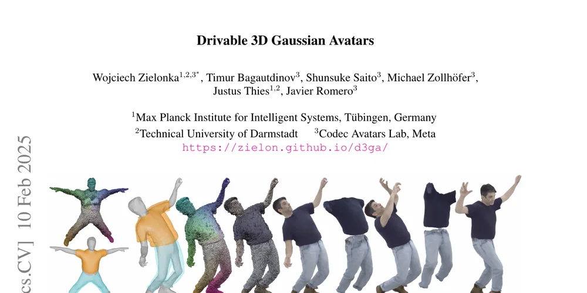
04Controllable, high-fidelity human avatars represented with 3D Gaussian splats.
Paper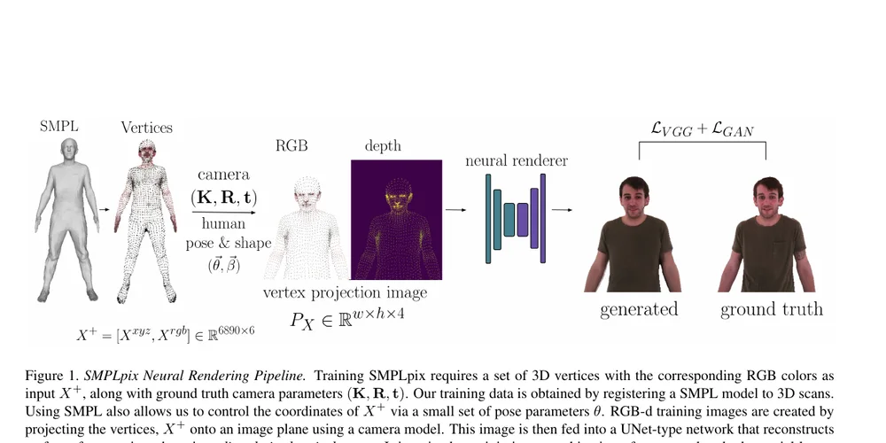
05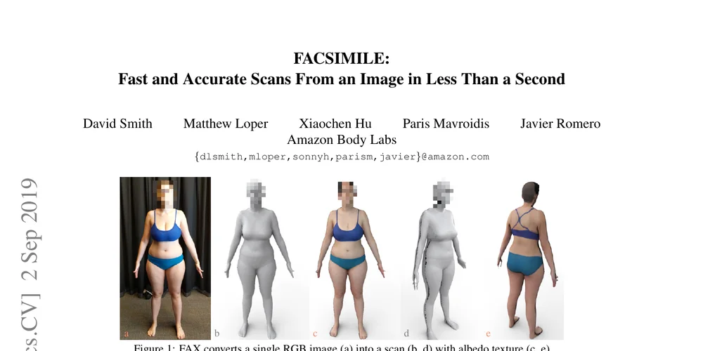
06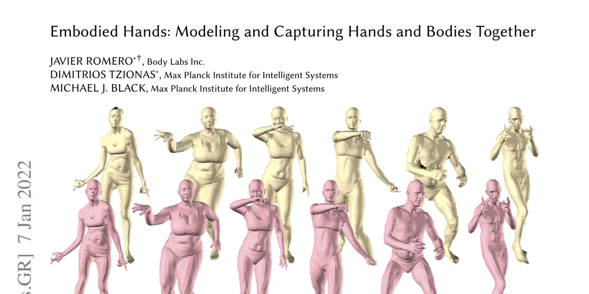
07A learned model for capturing and representing expressive hands together with the body.
Paper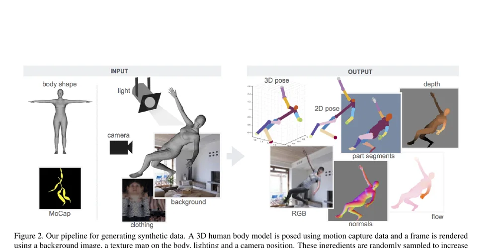
08SURREAL: synthetic people at scale for learning human depth and part segmentation.
Paper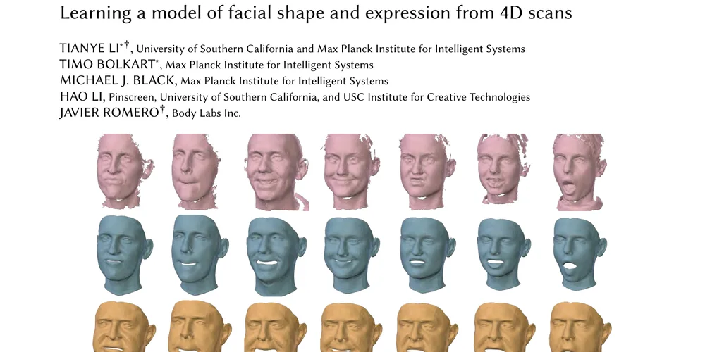
09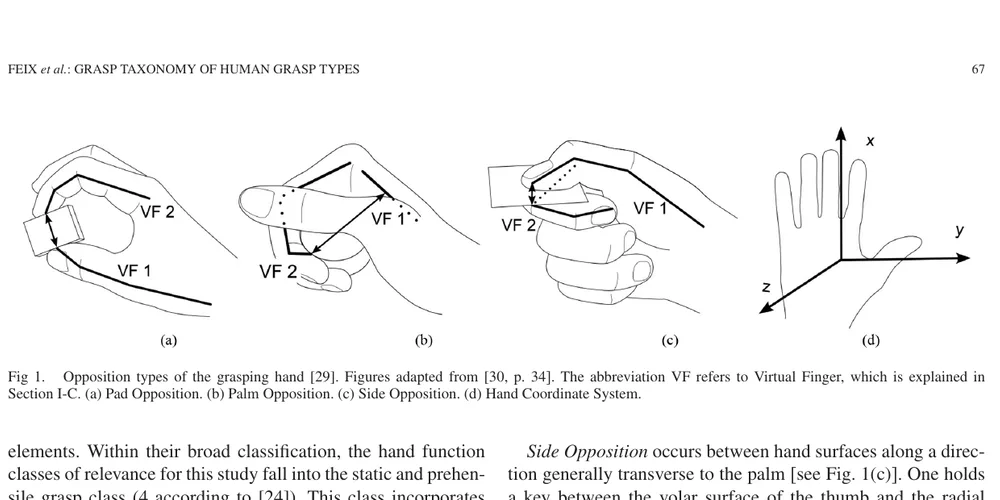
10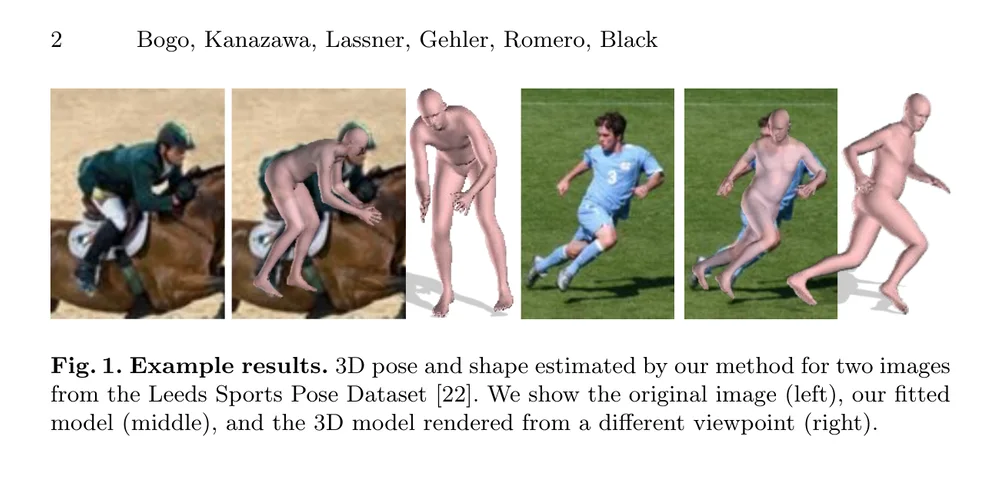
11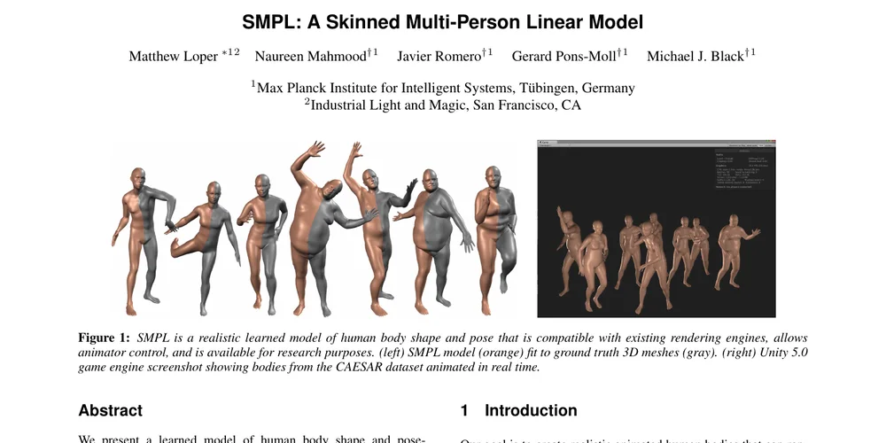
12Complete bibliography
74 records · newest first · select a year
No publications match that search.
Curriculum vitae
Research leadership across Meta, Amazon, Body Labs, and the Max Planck Institute for Intelligent Systems.
Open full CVGet in touch